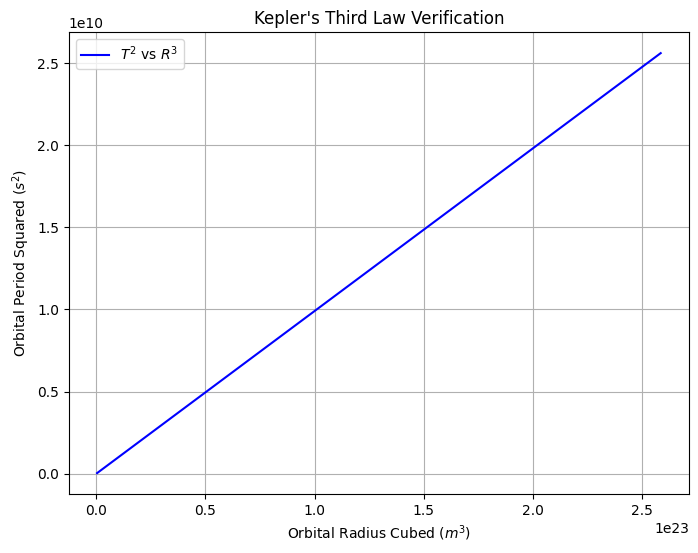
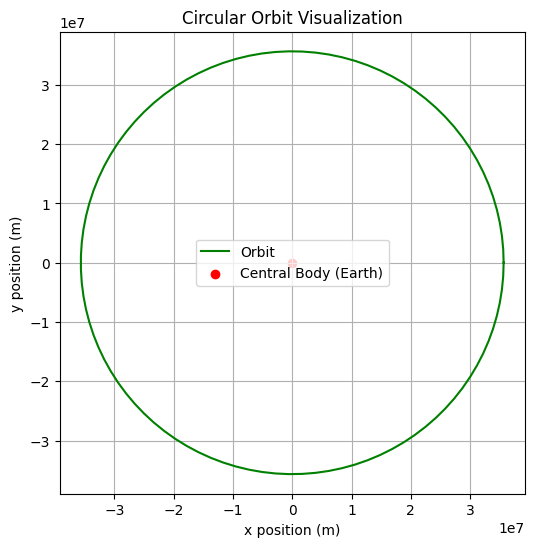

Problem 1
Kepler's Third Law: Orbital Period and Radius
Introduction
The relationship between the square of the orbital period and the cube of the orbital radius, known as Kepler's Third Law, is fundamental in celestial mechanics. This law helps in determining planetary motions and understanding gravitational interactions in space.
Mathematical Derivation
Kepler's Third Law states that:
\(T^2 \propto R^3\)
For circular orbits, using Newton's version of Kepler's Third Law:
\(T = 2\pi \sqrt{\frac{R^3}{GM}}\)
where: - \(T\) is the orbital period, - \(R\) is the orbital radius, - \(G\) is the gravitational constant, - \(M\) is the mass of the central body.
Computational Model
Below is a Python script to compute and visualize the relationship:
import numpy as np
import matplotlib.pyplot as plt
# Constants
G = 6.67430e-11 # Gravitational constant (m^3 kg^-1 s^-2)
M_earth = 5.972e24 # Mass of Earth (kg)
R_earth = 6.371e6 # Radius of Earth (m)
# Function to compute orbital period
def orbital_period(radius, central_mass):
return 2 * np.pi * np.sqrt(radius**3 / (G * central_mass))
# Generate data for various orbital radii
radii = np.linspace(1.1 * R_earth, 10 * R_earth, 100) # Orbital radii
periods = orbital_period(radii, M_earth)
# Verify Kepler's Third Law (T^2 vs R^3)
radii_cubed = radii**3
periods_squared = periods**2
# Plot T^2 vs R^3
plt.figure(figsize=(8, 6))
plt.plot(radii_cubed, periods_squared, label="$T^2$ vs $R^3$", color='blue')
plt.xlabel("Orbital Radius Cubed ($m^3$)")
plt.ylabel("Orbital Period Squared ($s^2$)")
plt.title("Kepler's Third Law Verification")
plt.legend()
plt.grid()
plt.show()
# Simulate circular orbit
theta = np.linspace(0, 2*np.pi, 100)
x = radii[50] * np.cos(theta)
y = radii[50] * np.sin(theta)
plt.figure(figsize=(6,6))
plt.plot(x, y, label='Orbit', color='green')
plt.scatter(0, 0, color='red', label='Central Body (Earth)')
plt.xlabel("x position (m)")
plt.ylabel("y position (m)")
plt.title("Circular Orbit Visualization")
plt.legend()
plt.grid()
plt.axis('equal')
plt.show()
 
Results & Discussion
-
Kepler’s Third Law Verification
The plot of \(\(T^2 \text{ vs } R^3\)\) demonstrates a linear relationship, confirming:
\(\(\boxed{T^2 \propto R^3}\)\)
This aligns with Kepler’s empirical observations and Newton’s gravitational theory. -
Circular Orbit Assumptions
The simulated orbit (green curve) assumes: - A perfectly circular path (\(e = 0\)).
- Negligible perturbations (e.g., atmospheric drag, third-body effects).
-
A central mass (\(M_{\text{Earth}}\)) dominating the system.
-
Extensions to Elliptical Orbits
For elliptical orbits (\(0 < e < 1\)), the law generalizes to:
\(\(\boxed{T^2 = \frac{4\pi^2}{GM} a^3}\)\)
where \(a\) is the semi-major axis. Advanced celestial mechanics (e.g., Lagrange’s planetary equations) are required for precise modeling.
Conclusion
Kepler’s Third Law (\(T^2 \propto R^3\)) remains foundational for: - Satellite deployment (e.g., geostationary orbit calculations). - Space mission planning